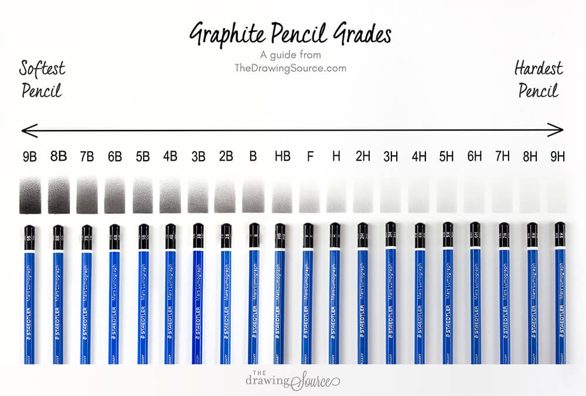

Dive Into Traditional Arts:
Tools & Mediums
This section contains information about these topics:
Pencil
Different types of pencils offer a range of hardness and softness that affect the quality of lines and shading in drawing.
Here’s a guide to the various types of pencils, how to use them, and their purposes:

Graphite Pencils
The most common type used in drawing and come in a range of grades from hard (H) to soft (B).
Grades:
H (Hard): Produces light, fine lines. The higher the number, the harder the lead (e.g., 2H, 4H).
B (Soft): Produces darker, broader lines. The higher the number, the softer the lead (e.g., 2B, 4B, 6B).
HB and F: Middle of the range, good for general use. HB is equivalent to a standard #2 pencil.
Usage and Purpose:
H Pencils: Used for fine details, technical drawing, and light sketching. Harder leads create lighter lines that are easier to erase and make precise, clean marks.
B Pencils:Ideal for shading, creating texture, and producing dark, rich lines. Softer leads are great for blending and creating a range of tones.
HB and F Pencils:Good for general sketching and writing, offering a balance between hard and soft leads.

Charcoal Pencils
Charcoal pencils produce rich, dark lines and are excellent for expressive drawing.
Types:
Vine Charcoal: Soft and easy to blend, great for broad strokes and shading.
Compressed Charcoal: Denser and darker, available in pencil form for detailed work.
Usage and Purpose:
Vine Charcoal: Best for initial sketches and loose, gestural drawings. It’s easily erasable and great for creating soft, light marks.
Compressed Charcoal: Used for intense blacks and detailed work. It provides a strong contrast and is good for final touches and deep shadows.

Mechanical Pencils
Mechanical pencils use replaceable leads and maintain a consistent line width.
Lead Sizes:
0.3mm to 0.9mm: Common sizes, with 0.5mm being the most standard.
Usage and Purpose:
Fine Leads (0.3mm to 0.5mm): Best for detailed drawing, fine lines, and technical work. The consistent sharpness is ideal for precision.
Thicker Leads (0.7mm to 0.9mm): Suitable for general sketching, writing, and broader lines.

Colored Pencils
Colored pencils contain wax- or oil-based cores infused with pigment.
Types:
Wax-Based: Smooth and blendable, but can create a waxy buildup.
Oil-Based: Less waxy buildup and better for layering, but can be harder to blend.
Usage and Purpose:
Wax-Based: Ideal for blending, layering, and creating vibrant colors. Good for general color work and fine details.
Oil-Based: Excellent for detailed work and layering colors without wax bloom. Preferred for more detailed and refined coloring.
How to Use Different Pencils:
Layering:
Build up tones and textures gradually by layering different grades of pencils. Start with harder pencils (H) for initial sketches and light layers, then move to softer pencils (B) for darker tones and shading.
Blending:
Create smooth transitions and gradients. Use blending tools like tortillons, blending stumps, tissue paper, or fingers to smooth out pencil strokes.
Cross-Hatching:
Add texture and depth. Cross-hatching involves drawing intersecting sets of parallel lines to build up shading and tone.
Scribbling:
Generate texture and value quickly. This technique is great for creating rough, textured surfaces like fur, grass, or fabric.
Smudging:
Achieve soft shadows and smooth gradients. Smudge pencil marks using a blending stump, tissue, or finger to soften lines and create a smooth finish.
Erasing:
Highlight areas and correct mistakes. Use different types of erasers (kneaded, vinyl, or electric) to lift graphite and create highlights or clean up lines.
Here are some useful links compiled to give further informations:
- Recommended Drawing Pencils for Realistic Drawing (and Pencil Grades Demystified!)
- CHOOSING AND USING SKETCHING PENCILS
- Types of Pencils – Exploring Different Pencil Types for Art
Click the thumbnail to play the video: